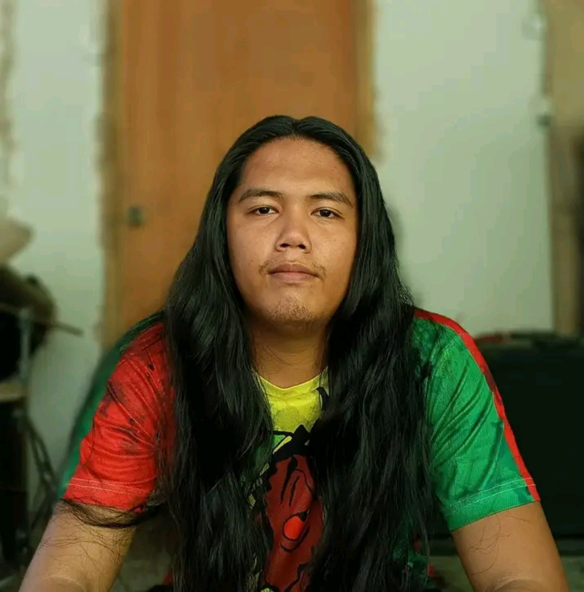
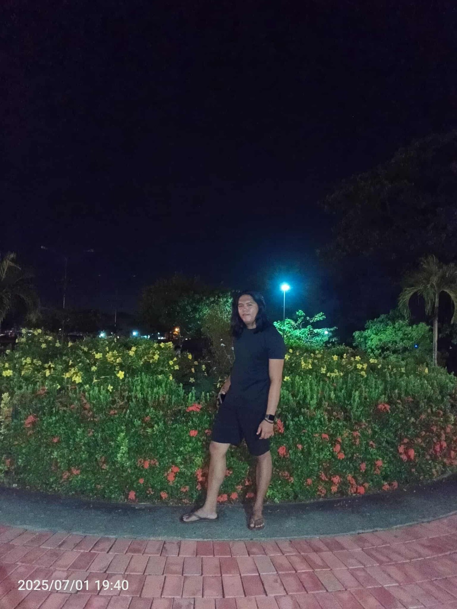

01
About Me ☕
Hi! I'm Lowell. I'm a simple person who enjoys music, learning new things, spending time outdoors, and finding fun in the little things.
This website is a small collection of the things I like and the moments I want to remember.
✦ Curious
✦ Determined
✦ Always growing
02
Random Shot #1 Random shot #2 Random shot #3 Don't have any good photos left lol
Photos 📷
A few moments and snapshots from my life.


03
Hobbies 🎵
These are some of the things that keep me happy, focused, and inspired.
🎸Playing GuitarsStrings, chords & practice
🎹Playing KeysMelodies & chords
🎧Listening to MusicAny genre, anytime
🎮Computer GamesPlay, explore & unwind
🍳CookingTrying things in the kitchen
🥾HikingTrails & fresh air
🌿Nature-WatchingQuiet moments outdoors
“I love music” — and yes, I listen to almost every genre. 😅